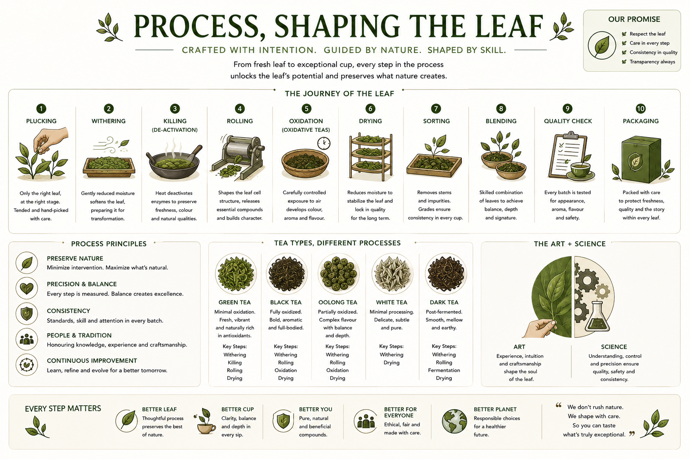

From fresh leaf to exceptional cup, every step in the process unlocks the leaf's potential and preserves what nature creates. This section covers the ten-step journey from plucking to packaging, the principles that govern each step, and the role of both art and science in producing consistent, high-quality Buna.

Reference image — Process, Shaping the Leaf: Crafted with Intention. Ten steps, process principles, tea-type comparisons, and the art-and-science balance.
Only the right leaf, at the right stage, tended and hand-picked with care. Plucking is the first processing decision. The selectivity of the picker determines the quality ceiling of the batch. No downstream step can compensate for leaves harvested at the wrong stage or handled carelessly at picking.
See Selective Harvest →Gently reducing moisture content to soften the leaf and prepare it for transformation. Withering is not simply drying — it is a controlled reduction that makes the leaf pliable without damaging its structure or triggering unwanted oxidation. Airflow, temperature, and duration are all variables.
See Process — Withering →Applying heat to deactivate enzymes — particularly polyphenol oxidase — to preserve freshness, colour, and natural qualities. Called "kill green" in green tea processing. For Buna leaves intended to retain a green, fresh character, this step locks in the leaf's natural state. For oxidative styles, this step is delayed or omitted.
See Thermal — Deactivation →Shaping the leaf cell structure, releasing essential compounds, and building character. Rolling can be done by hand or machine and determines the final form of the dried leaf — its density, surface area for extraction, and visual presentation. It also initiates or continues oxidation by breaking cell walls.
See Process — Bruising/Rolling →Carefully controlled exposure to air that develops colour, aroma, and flavour. For Buna styles that parallel oolong or black tea, oxidation is a deliberate, timed step. The degree of oxidation is one of the most significant processing decisions — it fundamentally changes the cup character of the finished leaf.
See Process — Oxidation →Reducing moisture to a stable level that locks in quality for the long term. Drying stabilises the leaf — stopping enzymatic and microbial activity, fixing the flavour profile, and preparing the leaf for storage and transport. Moisture content at this stage determines shelf life. Under-drying leads to mould; over-drying degrades aromatics.
See Sun Drying / Air Drying →Removing stems, impurities, and off-grade material. Sorting grades the leaf for consistency in every cup. It is a quality gate — the point at which physical quality is assessed and material that does not meet standard is separated. Sorting by hand allows the most precise control.
Combining leaves from different batches, stages, or processing pathways to achieve a consistent, intended cup profile with balance, depth, and a signature character. Blending is an art — it requires sensory knowledge, an understanding of how different components interact, and a clear target profile.
Every batch tested for appearance, quality, aroma, flavour, and safety before release. Quality check is the formal verification step — confirming that what has been produced meets the standard that was intended. It is documentation as much as tasting. Records from quality checks feed back into process improvement.
See Quality — Traceability →Packed with care to protect freshness, quality, and the story within every leaf. Packaging is not a neutral step — it is the last line of defence against moisture, light, oxygen, and contamination. Packaging choice also communicates product identity. Every material decision has both quality and environmental consequences.
See Environment — Packaging →Minimise intervention. Maximise what is natural. The best processing amplifies what the leaf already is — it does not replace it. Every step should have a reason, and the reason should be the leaf.
Every step is measured. Balance creates excellence. Precision does not mean rigid — it means intentional. Each variable is understood, monitored, and adjusted as needed. Balance is the outcome of precision applied with experience.
Standards, skill, and attention in every batch. Consistency is the promise to the person who buys Buna — that what they experienced last time is what they will experience this time. It is built through documented practice, not intuition alone.
Honouring knowledge, experience, and craftsmanship. Processing knowledge is partly scientific and partly held in the hands and judgement of experienced practitioners. Both are legitimate, both are needed, and both deserve respect.
Learn, refine, and evolve for a better tomorrow. No process is finished. Every batch offers data, every season offers learning, every cup offers feedback. The commitment to improvement is what separates a living practice from a fixed routine.
Experience, intuition, and craftsmanship shape the soul of the leaf. The art of processing is the accumulated knowledge that cannot yet be fully measured — the judgement call about when a leaf is ready, the hand that knows how much pressure to apply in rolling, the eye that reads the colour change during oxidation.
Understanding, control, and precision ensure quality, safety, and consistency. The science of processing is the documented, measurable dimension — temperature logs, moisture readings, extraction data, and compound analysis. Science makes the art reproducible and the results defensible.
Better leaf → Better cup → Better you → Better for everyone → Better planet. We do not rush nature. We shape with care. So you can taste what is truly exceptional.